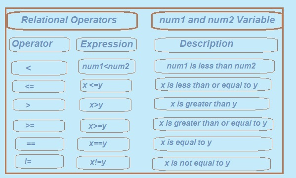

2. < Less Than Operator.:
The next one is the Less Than operator, which checks if the left operand is less than the right operand. It returns true (1) if this is true; otherwise, it returns false (0).
For example:
int a = 15, b = 13;
a < b; // This checks if a is less than b
In this case, since a (15) is not less than b (13), the expression a < b evaluates to false, represented by 0 in C.
To see this demonstrated in a simple program:
Relational Operators in C Language: An Easy Guide to Comparison
In this section, we are going to study Relational Operators in C. Arbitrary symbols are used to create a relationship between two variables or operands and they essentially allow us to make comparisons of values in C programming.
These operators are most often used when comparisons of values or conditions are required. These operators help us check whether two values are related or not, which can further help program decisions. The result of the comparison can either be true (1) or false (0) and this forms the basis for controlling the program flow.
The use of Relational Operators in C will now be described:
1. > Greater Than Operator
2. < Less Than Operator
3. >= Greater Than or Equal to Operator
4. <= Less Than or Equal to Operator
5. != Not Equal to Operator
6. == Equal to Operator
Getting a Deeper Understanding of Relational Operators
With relational operators in C, basically comparisons are made between two values, whether numeric or logical, character data or even strings. Once we compare values by using these operators the output will either be true (1) or false (0).
This will go a long way to assist in decision-making on how the rest of the program is to flow.
Now, let's go through these operators one after the other and understand the implementation.
1 > Greater Than Operator(>).:
The Greater Than operator compares the values of two operands. If the left operand is greater than the right, it returns true (1); otherwise, it returns false (0).
For example:
int a = 5, b = 3;
a > b; // This checks if a is greater than b
This was the case when a (5) was greater than b (3);
thus the expression a > b is true and returns 1 in C.
The following simple program demonstrates the use of the Greater Than Operator:
program to use the greater than operator (>) to compare the operand value in C.
#include <stdio.h>
int main ()
{
int num1, num2;
printf (" Enter the value of num1: ");
scanf (" %d", &num1);
printf (" \n Enter the value of num2: ");
scanf (" %d", &num2);
/* use greater than operator (>)*/
printf("\n num1>num2=%d",(num1>num2));
printf("\n num2>num1=%d",(num2>num1));
return(0);
}
Output:
Enter the value for num1: 5
Enter the value of num2: 3
num1 > num2= 1
num2 > num1=0
Program Explanation:
This program will demonstrate how one can compare two numbers using the Greater Than operator (>). It will begin with the declaration of two integer variables which are named num1 and num2 to store values provided by the user.
After this, the program must prompt the user for these values and then, after receiving the inputs, compare the two numbers using the Greater Than operator. The first check is to see whether num1 is greater than num2 and then print to the screen either 1 (true) or 0 (false) depending on the result of this checks.
The same is done for num2 and num1. When the user enters 5 in num1 and 3 in num2, the output becomes num1 > num2 = 1 (5>3) and num2 > num1 = 0 (3>5).
The final command of the program returned 0, indicating correct execution. All in all, this program is about the use of the Greater Than operator in C for comparing two numbers with the results printed as 1 (true) or 0 (false).

program to use the less than operator (<) to compare the operand value in C.
#include <stdio.h>
int main ()
{
int num1=6, num2=7;
printf("\n num1 < num2=%d",(num1 < num2));
printf("\n num2 < num1=%d",(num2 < num1));
return(0);
}
Output:
num1 < num2= 1
num2 < num1 =0
Program Explanation:
This program serves as a simple example of the Less Than (<) relational operator to be used in C programming. This code is going to compare two integers num1 and num2 using this operator and print the result.
First two variables declared are num1 and num2 which are integers. Hardcoded values of 6 and 7 are given to num1 and num2 respectively. No user input would be expected since these values are hardcoded into the program.
First part compares num1 is less than num2 with the help of Less Than (<) operator; the statement printf("\n num1 < num2 = %d", (num1 < num2)); just does that. So the comparison will check whether 6 is less than 7, which is true. In C, such a true comparison is represented by 1. Hence, the output for this comparison should be as shown below: num1<num2=1.
The second comparison happens now: it checks whether num2 (which is 7) is less than num1 (which is 6) using the same Less Than operator. This is done by the line printf("\n num2 < num1 = %d", (num2 < num1));. Given that 7 is not less than 6, this returns false code-wise, which in C is represented by 0. So here the output is num2 < num1 = 0.
The program has finally executed successfully with the return value 0.
In conclusion, the program demonstrates the way in which the Less Than (<) relational operator functions in C. It compares two integers, num1 and num2 and prints whether these comparisons yield true (1) or false (0). In this specific case, since 6 is less than 7 the first comparison yields true (1) as opposed to the second which returns false (0).
Previous Topic:-->> increment decrement Operators || Next topic:-->>Logical perators